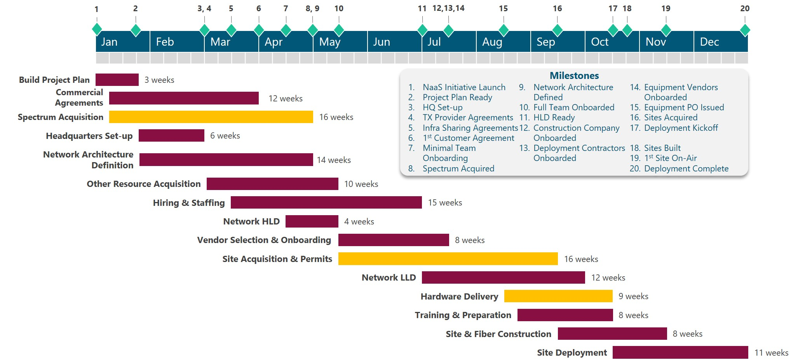

This section
provides an examination of key tasks and milestones for NaaS Projects,
providing guidance to generate and validate the High-Level Schedule for the
Initiative.
Section 2.2.2
stated that there is a myriad of tasks that must be planned and managed
throughout the Lifecycle of the NaaS Initiative to accomplish strategic
objectives.
Thus, the
initial process to establish a Schedule is to identify and document the
specific actions to be performed to achieve these objectives.
First, the
Project milestones are defined. A milestone is a reference point or major event
that marks an important achievement related to the objectives and serves to
report progress. These milestones can be derived by identifying the major
components of the deliverables or objectives.
Then, high
level tasks are identified based on objectives and milestones. This can be done
by the NaaS Operator through the decomposition technique that consists in
dividing and subdividing milestones and deliverables into smaller parts and
actions until getting to the required level of detail.
For the
High-Level Schedule is not necessary to get deep into the details and is enough
to identify tasks at the Organization Level. However, for further refinement of
the Plan, the same technique can be applied to cascade tasks up to the
individual level.
Table 3 below
provides a generic list with the most common milestones and tasks by
category, including guidance to identify applicability for the Initiative.
NaaS Operators are encouraged to use this table to define and orchestrate milestones
and tasks for their Initiatives.
|
Category
|
Task/Milestone
|
Applicability
Criteria
|
|
Milestones
|
|
Resource Acquisition and Organization Setup
|
NaaS Initiative Launch
|
Applies for all initiatives
|
|
Project Plan Ready
|
Applies for all initiatives
|
|
HQ Set-up
|
Required for new companies with no
headquarters or for expansions
|
|
TX Provider Agreements
|
Required when relying on 3rd Parties for
transport services
|
|
Infra Sharing Agreements
|
Required when tower or fiber infrastructure
is going to be leased/shared with a 3rd Party
|
|
1st Customer Agreement
|
Applies for all initiatives
|
|
Minimal Team Onboarding
|
Applies for new organizations
|
|
Spectrum Acquired
|
Applies for all initiatives
|
|
Full Team Onboarded
|
Applies for all initiatives
|
|
Network Planning & Design
|
Network Architecture Defined
|
Applies for all initiatives
|
|
HLD Ready
|
Applies for all initiatives
|
|
Construction Company Onboarded
|
Required only when greenfield sites are
being built through a contractor
|
|
Deployment Contractors Onboarded
|
Required only when site I&C is
performed through a deployment contractor
|
|
Equipment Vendors Onboarded
|
Applies for all initiatives
|
|
Equipment PO Issued
|
Applies for all initiatives
|
|
Network Deployment & Start of
Operations
|
Sites Acquired
|
Applies for all initiatives
|
|
Deployment Kickoff
|
Applies for all initiatives
|
|
Sites Built
|
Required only if greenfield sites are being
built
|
|
1st Site On-Air
|
Applies for all initiatives
|
|
Deployment Complete
|
Applies for all initiatives
|
|
Tasks
|
|
Resource Acquisition and Organization Setup
|
Build Project Plan
|
Applies for all initiatives
|
|
Commercial Agreements
|
Applies for all initiatives. Required
agreements may vary
|
|
Spectrum Acquisition
|
Applies for all initiatives
|
|
Headquarters Set-up
|
Required for new companies with no
headquarters or for expansions
|
|
Hiring & Staffing
|
Required for new companies or if additional
staff is required
|
|
Other Resource Acquisition
|
Applies for all initiatives. Required
resources may vary
|
|
Network Planning & Design
|
Network Architecture Definition
|
Applies for all initiatives
|
|
Network HLD
|
Applies for all initiatives
|
|
Vendor Selection & Onboarding
|
Applies for all initiatives. Required
vendors may vary. At least Network Equipment Vendor is required
|
|
Site Acquisition & Permits
|
Applies for all initiatives
|
|
Network LLD
|
Applies for all initiatives
|
|
Hardware Delivery
|
Applies for all initiatives
|
|
Network Deployment & Start of Operations
|
Training & Preparation
|
Applies for all initiatives
|
|
Site & Fiber Construction
|
Only for initiatives that require to build
greenfield sites or fiber deployments
|
|
Site Deployment
|
Applies for all initiatives
|
Table 3. Generic NaaS Milestones &
Tasks.
Once the
Project tasks and milestones have been identified, specific task duration and
sequencing must be assigned to orchestrate the High-Level Project Schedule.
There are
several software tools in the market, licensed and opensource, to aid and
assist operators in this task. Examples of these tools are Microsoft Project or
Project Libre, where users can build a new project, add or remove activities,
adjust their relationships, durations, and allocated resources. Other available
tools are listed in the Runbook
Tool Catalogue.
The following
sections provide generic instructions to perform these processes. Afterward, a generic
view of the High-Level Schedule for NaaS Operator is presented along with
guidelines for customization.
In this
process, the NaaS Operator estimates the amount of time each activity will take
to complete with the estimated resources.
Estimating activity
durations uses information from the Strategy & Scope module, estimated
resource quantities, and resource utilization plans. Other factors that may
influence the duration estimates include constraints imposed by the strategic goals
and objectives.
It's important
to note that the number of resources that are expected to be available to
accomplish an activity, along with the skill proficiency of those resources,
may determine the activitys duration.
Common
techniques to estimate duration are:
- Analogous Estimating: Estimate
duration or cost using historical data from a similar activity or project.
It is a gross value estimating approach, sometimes adjusted for known
differences in project complexity.
- Parametric Estimating: Uses an
algorithm to calculate cost or duration based on historical data and
project parameters (e.g. weight, distance, volume). It uses a statistical
relationship between historical data and other variables (e.g. number of
sites, kilometers of fiber) to calculate and estimate for activity
parameters.
- Program
Evolution and Review Technique (PERT), or Three-Point Estimating, is a
step deeper than Parametric Estimating. Increases the accuracy of
single-point estimates by considering estimation uncertainty and risk.
A detailed
description and examples of these techniques can be found in the Primer
on Critical Path Method & Estimation Techniques.
The last step
to generate a preliminary Schedule is to sequence tasks, i.e. orchestrate tasks
in a logical sequence that is compliant with NaaS Operators strategy, goals,
and objectives and obtains the greatest efficiency given all project
constraints.
This process
involves the identification of relationships among the project activities
having a clear view of predecessors and successors as well as lead or lag times
between activities. Sequencing can be performed by using project management
software or by using manual or automated techniques.
The use of
Project Management software provides several advantages as it facilitates
iterations and moreover, with the use of centralized/cloud tools, the Schedule
& Plan can be made available to the entire organization making it easier to
create awareness and focus efforts throughout the NaaS Operator areas.
Figure 3 shows a generic Schedule
for a NaaS Initiative that can be customized by NaaS Operators to fit their own
tasks, timelines, and logical sequence. To that end a set of guidelines and
recommendations for customization are provided below as well as the associated High Level Schedule
Template.

Figure 3. Generic NaaS High Level Schedule.
- Build Project Plan. This task
instantiates the plan described in this document and serves as a guide for all
the other tasks. Three weeks can be considered to apply several iterations and
gain acceptance and alignment among the core/executive team.
-
Commercial Agreements. Various
commercial agreements should be in place before final definition of the Network
Architecture, as these agreements may guide some of the decisions made for
architecture. This can be a lengthy process that requires engagement with partners,
analysis, negotiations and closing agreements. In consequence adequate duration
must be considered (12 weeks are shown, but no less than 2 months must be
allocated)
-
Spectrum Acquisition. This is one of
the critical tasks (identified in yellow in Figure 3). Without spectrum, the
NaaS Operator cannot offer any end user services. In some cases this might be
de-risked through previous agreements with partner MNOs. However, if thats not
the case, duration needs to be carefully adjusted considering the acquisition
approach and the associated delays. Without spectrum secured, Network
Architecture nor Network HLD can be finalized.
-
Headquarters / Remote Head Office
Set-up. Formal activities of the NaaS Operator can commence remotely but at
some point, a centralized facility is required to host resources and operations
of the NaaS Operator, even if it is just a Remote Head Office for warehousing
and as a central point of reference. This task and the associated milestone
should be completed before completing hiring and staffing, although its
desirable to have it before. Time will depend on the acquisition approach: the
generic plan shows the case for a leased facilities without furniture for which
6 weeks is reasonable; If leasing a managed facility time to completion might
be less than 6 weeks; and if building a facility it will take longer.
-
Hiring & Staffing. This task is
usually active for several months. However, the complete project relies on
internal staff; thus, the minimal team should be onboarded before the Network
HLD starts and the full team should be onboarded in the worst case before
Training & Preparation begins.
-
Other Resource Acquisition. This is a
miscellaneous task to get any other resource not considered as part of the
vendor selection and onboarding. Timelines will depend on specific resources
required and the related tasks.
-
Network Architecture Definition. This
is an important task as it provides inputs to the overall design and deployment
activities. It depends on Spectrum acquisition and commercial agreements to be
completed; and in turn, if affects Network HLD since this task cannot be
completed if the Architecture is not finalized. Duration may vary from 2 weeks
to several months depending when it starts, predecessor tasks and expertise of
the NaaS Operator to perform the required analysis.
-
Network HLD. The duration of this task
will vary based on the number of sites to be deployed and the amount of
resources available. Number of sites per week will further depend on the complexity
of the design and level of detail. As a general criterion, HLDs will take less
time than LLDs. Without HLD, equipment vendor selection and site acquisition
cannot start.
-
Vendor Selection & Onboarding. This
task contemplates vendor selection and onboarding of various vendors such as
construction company, deployment contractor and equipment vendors. Minimum
duration is 4 to 6 weeks to allow for an adequate engagement, analysis, selection
and onboarding of vendors. However, it might be extended. Without final vendor
selection, network LLDs cannot be finalized and in consequence deployment
cannot start.
-
Site Acquisition & Permits. Another
critical task that carries a high risk as it cannot be fully controlled by the NaaS
Operator and is delay-prone. Depending on the acquisition approach, risk can be
reduced. However, for greenfield sites a minimum of 4 months should be
considered being aware that this could take longer. For low-risk sites or those
that are acquired before, Network LLD can start and be completed after the last
site is acquired.
-
Network LLD. Similar to HLD, the
duration of this task will vary based on the number of sites and the amount of
resources available. However, the time to generate LLDs will be significantly
higher than HLDs due to the level of detail required. Nevertheless, actual
duration may get extended due to Site Acquisition and other commercial or
administrative issues.
-
Hardware Delivery. Network equipment is
usually shipped from abroad. Thus, delivery time, after purchase orders are
issued must contemplate production (as required) and shipping. This is usually
no less than 45 days. However, it can be de-risked based on lead times informed
by the vendor during RFI/RFP and contracting process.
-
Training & Preparation. While
waiting for hardware all the preparation tasks for deployment can be done.
Ideally, this task is synchronized to end at the same time that hardware is
delivered so deployment can start without delays.
-
Site & Fiber Construction. Whenever
any sites or fiber infrastructure is build, this task should be considered,
allocating adequate times for the number of sites and resources for
construction. Deployment of a specific site cannot start until construction of
civil and fiber infrastructure is finalized.
-
Site Deployment. Site deployment starts
once the hardware has been delivered and any construction of site or fiber
infrastructure is finalized. For multi-site deployments deployment can start
with existing sites before the construction works are over in all the sites, as
shown in the Figure. As a rule of thumb for timelines, it can be assumed that
one week per site per crew to deploy sites.
The preliminary Schedule may need to go through several
iterations before final acceptance from NaaS stakeholders. These iterations may
be triggered by specific constraints, change requests from the executive team,
new information related to timelines or status and other factors.
In addition,
for each iteration, the Schedule must be validated with respect to the
Strategy, achievement of objectives and the Resource Plan. To validate the
Schedule the NaaS Operator must answer the following questions:
- Is the Schedule accomplishing the NaaS
strategic objectives?
-
Are timelines acceptable?
-
Are timelines feasible?
-
Are there any flaws in the logical
sequence?
-
Is there any conflicts with resource
plan such as overallocation or allocating tasks before resources are acquired?
-
Are there any execution risks, and if,
so are these risks acceptable and manageable?
If an issue is
detected, the following techniques and approaches can be put into practice to
update the Schedule and/or the Resource Plan.
- Resource Leveling. When shared or critically required resources are
available only at certain times or in limited quantities or are over-allocated,
NaaS Operators may adjust the start and finish dates of activities. This
technique is often called Resource Leveling.
-
Smooth activities. Say there is an activity that takes 15 days but has a
float of 15 more days before other successor activities may start. In this
case, the resources of this activity may reduce their effort to 50% of the
planned levels, smoothing and lengthening this activity up to 30 days.
-
Fast Tracking. Through a review of the Schedule, NaaS Operator looks for
sequential activities that may be done in parallel to some degree.
-
Crashing. For activities which duration depend on the number of resources dedicated to them (e.g. building a
wall with 3 people vs dedicating 6 people to it). Therefore, the team may find
such activities in the critical path, and apply additional resources to it, to
shorten the global project duration.
The
Communications Plan is the component of the High Level Project Plan that
documents how communications across the NaaS Organization will be structured,
implemented and monitored. As mentioned in Section 2.2.4, a well designed and
implemented Communications Plan avoids delays and rework due to
miscommunication and lack of coordination which is critical for NaaS Operators
due to the high cost of re-work and financial constraints that are faced in
rural environments.
Sections below
present an examination of the required components for an effective
Communications Plan, providing guidance for the NaaS Operator to customize
reporting mechanisms, communication channels and document management rules and
systems.
Meetings and
reports are valuable means to communicate information and coordinate efforts in
any organization. However, they can be a source of overhead reducing efficiency
to the overall activities. For this reason, it is important to determine which
information and when needs to be communicated through meetings and/or reports.
In the case of
meetings, the NaaS Operator can establish periodic and ad-hoc meetings, in
addition to strategic governance meetings defined in the Strategy & Scope
Module. Periodic meetings have a concrete purpose that require recurrent
synchronization within a specific set of stakeholders, and are scheduled in
advance with a specific frequency.
Purpose of
periodic meetings must be established by the NaaS Operator based on stakeholder
needs, management and coordination requirements. Common purposes of periodic
meetings are:
- Project Planning / Steering. Formal meetings with the management team and key
stakeholders to analyze and make planning decisions that affect an specific
team or project.
-
Status/Progress Review. Formal meetings to report and evaluate current status and
progress of ongoing tasks and activities.
-
Financial & Network Performance
Meetings. Formal meetings to assess
business and/or network performance based on KPIs and other standardized
metrics and reports.
-
Stand-up Check points. Informal and quick meetings to brief project members of
status of ongoing and upcoming activities that require coordination between
team members.
Frequency of
these meetings will vary based on purpose and the need for collaboration /
assessment of the aspects mentioned above. It can be daily (mainly for stand-up
check points), weekly, bi-weekly, monthly, or quarterly.
On the other
side, ad-hoc meetings are asynchronous in nature and are created based on a
specific communication need., such as team coordination, discussion of issues
and changes, respond to contingencies (war rooms) and to report results from a
major achievement or milestone.
In a similar
way to meetings, reports can be scheduled with certain frequency or requested
on-demand. Reporting takes time so its important to define efficient methods
of reporting to reduce overhead to a minimum, and implement as much as possible
ways to automate reports and use portals / cloud applications that allow anyone
to dive in the information on their own. Based on the specific requirement
reports can be email updates, Project Management assets, Dashboards &
Tracking Sheets, slide presentations or spreadsheet reports.
The NaaS
Operator must take into account that working in a rapidly changing environment
requires communicating these changes more frequently and efficiently. Thus,
frequent team checkpoints and updates are required. A set of meeting and
reporting rules must be defined by the NaaS Operator. To that end, they can use
the Communications
Plan Template and the following recommendations:
- Minimize overhead by defining the least
number of meetings and reports that ensure adequate coordination, avoiding long
meetings and defining simple reporting formats.
-
Include stand-up meetings as a key
mechanism for team synchronization and coordination, especially for inter-departmental tasks.
-
Promote asynchronous reporting through
a push model that allows the generator of the report to notify changes and
updates without having to meet with the full set of stakeholders. This also minimizes interruption of actual work.
-
Allocate adequate time for meetings to
avoid re-scheduling
-
Establish purpose and agenda for every
meeting and send it ahead of time to create interest, allow for preparation and
ensure engagement.
-
Involve only the required stakeholders
for each meeting, avoiding crowded meetings with inactive or uninformed
participants. In particular, it is important to minimize the number of people from
the same team going to large meetings. Large meetings are only recommended if
they are used to share key information across the company.
-
To close a meeting, sum-up agreements
and next steps. In addition, one of the assistants should be designated as the
note taker to share the overall notes and agreements with the participants.
Communication
channel plays a key role in how the information is received, processed and
utilized by the recipients. Thus, the Communications Plan must establish
communication channels to be used across the NaaS Organization, specifying in
addition, under which circumstances one of them should be preferred.
Table 4
presents a comparison of typical communication channels which may be used by
NaaS Operators to identify communication channels to be considered for their
Initiative.
|
Criteria
|
Face-to-Face
/ Meetings
|
Email
|
Phone
|
Messaging
apps
|
Video
Conferencing
|
Enterprise
Communication Platforms
|
|
Visual/Non-verbal communication
|
✔
|
|
|
|
✔
|
✔
|
|
File Sharing
|
|
✔
|
|
✔
|
|
✔
|
|
One-to-many conversations
|
✔
|
|
|
✔
|
✔
|
✔
|
|
One-on-one conversations
|
✔
|
✔
|
✔
|
✔
|
✔
|
✔
|
|
Mobility
|
|
✔
|
✔
|
✔
|
|
✔
|
|
Voice
|
✔
|
|
✔
|
|
✔
|
✔
|
|
Instantaneous notification
|
N/A
|
|
✔
|
✔
|
|
✔
|
|
Cross-platform support
|
N/A
|
✔
|
|
✔
|
✔
|
✔
|
Table 4. Communication Channels
Once communication channels are established,
the NaaS Operator may define simple rules to prioritize them based on
the following criteria:
- Formality. Phone, face-to-face meetings
or email are good candidates for formal communications.
-
Urgency/Criticality. For urgent and
critical matters phone or messaging apps are often preferred.
-
Collaboration. Depending on the degree
and type of collaboration face-to-face meetings, video calls, enterprise
communication platforms or messaging apps may be used.
-
Complexity. For complex or
hard-to-explain issues face-to-face meetings are the golden choice. However, if
thats not possible, video calls should be considered.
In any case it
is important that the NaaS Operator promotes direct communication among
personnel from all the areas and departments while collaborating, avoiding
silos and setting apart hierarchies.
The Communications Plan
Template can be utilized by NaaS Operators to document Communication
Channels and utilization criteria.
Document management is the set of
processes and techniques to create, track and store digital or digitized
documents. Usually, a Document Management System (DMS) is used to classify,
retain, and protect documents, supporting versioning, collaboration and
workflow automation.
For NaaS Operators is imperative
to implement some sort of Document Management System, as it offers the
following benefits:
- Centralized Storage that prevents loss
of consistency and integrity of information.
-
Document distribution and access
management that ensures required information is opportunely accessed by
authorized users only.
-
Fast and easy information retrieval
that avoids delays on any tasks requiring documents or files stored in the
system
-
Provide high-level information
security.
-
Collaboration that enables multiple
users to view and modify documents at the same time while maintaining
consistency, allowing for an easy way to comment and update documents while
maintaining consistency
-
Versioning that lets users retrieve
previous versions of a document or continue working from a selected point.
Even with the cost associated
with these tools, the value that is obtained from them, easily makes up for
this cost. To have a simple example, inconsistency in versions can create
misinformation, compatibility and lack of coordination that implies loss of
time and money which can be solved through the use of these systems.
Table 5 provides a comparison of
common Document Management Systems that can be considered by NaaS Operators for
implementation in their Initiatives. In addition, small financially constrained
NaaS Operators could use free versions of Drive, Dropbox or OneDrive to perform
Document Management by sacrificing robustness, support and some integration,
workflow and collaboration features.
|
Criteria
|
SharePoint
(Microsoft
365)
|
Alfresco
|
Onlyoffice
|
Drive1
(G-Suite)
|
Dropbox1
|
|
Storage Space
|
1 TB
|
Flexible
|
500 GB
|
Unlimited
|
Unlimited
|
|
Versioning
|
✔
|
✔
|
✔
|
✔
|
✔
|
|
Workflows
|
✔
|
✔
|
|
|
|
|
Integration with other apps and systems
|
Office, ERP,
BI, Project Management, Ticketing
|
ERP, email,
cloud storage and Google Docs
|
Cloud storage
|
Office 365,
Google Docs, Others through APIs
|
Office 365
|
|
Online editing
|
✔
|
✔
|
✔
|
✔
|
|
|
Device Synchronization
|
✔
|
✔
|
|
✔
|
✔
|
|
Deployment Model
|
Cloud
|
Cloud,
On-premise, Hybrid
|
Cloud,
On-premise, Hybrid
|
Cloud
|
Cloud
|
|
Cost
|
$12.5/user/
month
|
on-premise:
free
Cloud /
Hybrid: request quote
|
Cloud: as low
as $1/user/ month
On-premise: $1200 per server (lifetime)
|
$12 /user/
month
|
$20 /user/
month
|
|
Note 1. Unlimited
storage available starting at 3 users for Dropbox and 5 users for Drive
|
Table 5. Document Management System
Comparison.
Selection and
implementation of a DMS is just the first part of the work. For NaaS Operators
is important not only to have a Document Management System, but to reinforce
best practices around it. The following recommendations are provided as a
starting point:
- Enforce usage of the DMS avoiding local
edition and distribution of shared documents
-
Promote collaboration through the DMS
keeping stable versions of shared documents and information
-
Establish adequate permissions to
access, edit and share documents
-
Optionally, develop workflows that
allow to notify changes and request inputs for document preparation and
completion as part of organizational processes.
Finally, the
selection of the DMS and general rules for its usage can be registered by the
NaaS Operator through the Communications
Plan Template.